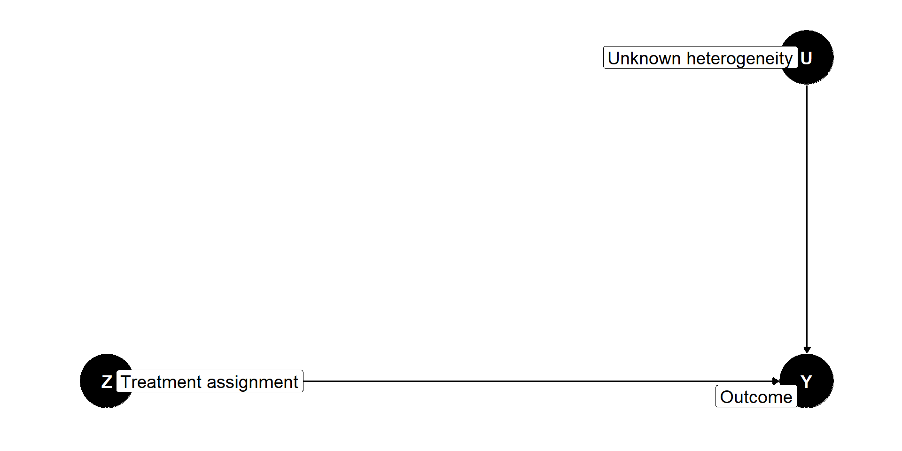

Panel Surveys
POLSCI 4SS3
Winter 2023
Announcements
Lab 2 deadline extended to Friday, January 27
(no new lab today)By 9 AM tomorrow or I will put you wherever
Last week
Overview of MIDA approach to research design as programming
Representative surveys as the gold standard of public opinion research
Challenging to decide:
- What to ask
- Who to ask
Lab: Get to know R, practice simulating a survey with random sampling
Today
Start thinking about cause and effect
Panel surveys: Survey the same sample multiple times
Lab: Revisit last week’s lab
Cause and Effect
Elements of a model
Signature
Functional relations
Probability distribution over exogenous variables
Part 1: Signature
: Describes variables and their ranges
Two kinds of variables
Endogenous: Generated from within the model
Exogenous: Generated from without the model
Types of exogenous variables
Anything explicitly (or assumed as) randomized
Mostly experimental treatment assignment
Denoted by \(Z\)
Anything unobserved by the model
Otherwise we would be in trouble!
Denoted by \(U\)
Types of endogenous variables
- Anything else
Outcomes: The things we ultimately want to understand (\(Y\))
Moderators: Variables that modify effects (\(X\))
Mediators: How or why something has an effect (\(X\))
Confounders: Introduce non-causal dependence (\(X\))
Part 2: Functional relations
: Set of functions that produce endogenous variables
Two ways to express functional relations
Structural causal models
(today)Potential outcomes framework
(next week)
Structural causal models
- Use Directed Acyclic Graphs
(DAGs)
Directed: Connected by arrows
Acyclic: Not cyclical, usually end in outcomes
Graphs: Visual representation as nodes and edges
They represent nonparametric causal models
Example

Part 3: Probability distribution over exogenous variables
- An explanation of how exogenous variables are generated
Examples
- \(Z \sim \text{Bern}(p)\) with \(p = 0.1\)
- \(U \sim N(\mu, \sigma)\) with \(\mu = 0\) and \(\sigma = 1\)
Panel Surveys
What are panel surveys?
Surveys where the same participants are asked questions at multiple points in time
Usually measure outcomes at every time
(but not necessary)More common among convenience samples
(e.g. students, twins)The name comes from their data structure
Panel data
| ID | year | income | age | sex |
|---|---|---|---|---|
| 1 | 2016 | 1300 | 27 | M |
| 1 | 2017 | 1600 | 28 | M |
| 1 | 2018 | 2000 | 29 | M |
| 2 | 2016 | 2000 | 38 | F |
| 2 | 2017 | 2300 | 39 | F |
| 2 | 2018 | 2400 | 40 | F |
Panel data
| ID | year | income | age | sex |
|---|---|---|---|---|
| 1 | 2016 | 1600 | 23 | M |
| 1 | 2017 | 1500 | 24 | M |
| 2 | 2016 | 1900 | 41 | F |
| 2 | 2017 | 2000 | 42 | F |
| 2 | 2018 | 2100 | 43 | F |
| 3 | 2017 | 3300 | 34 | M |
What are panel surveys for?
- To measure attitudes in a population over time
- To understand the effect of events occurring between waves
Challenge
Panel attrition: Participants may drop out from follow up waves
It may offset the benefit of conducting a panel survey
It may depend on factors relevant to the study
Example 1

Example 2
Next Week
Sensitive Questions
Focus on: Which research design seems more appropriate to elicit honest answers?
Break time!